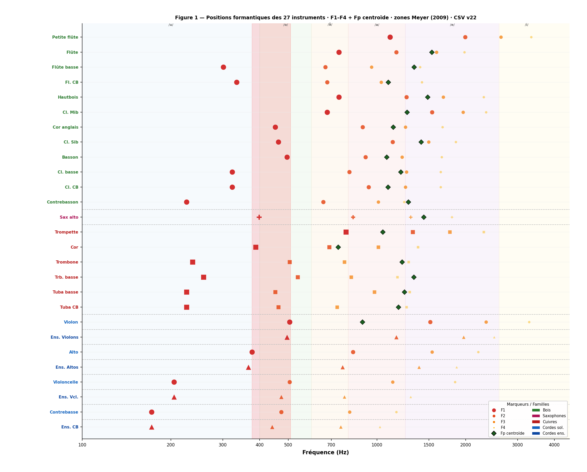
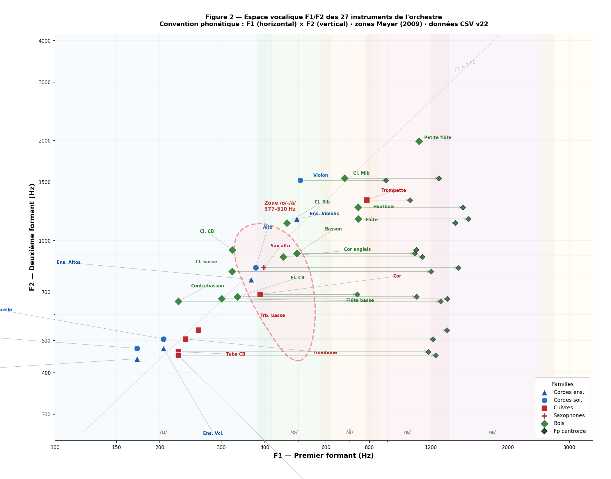
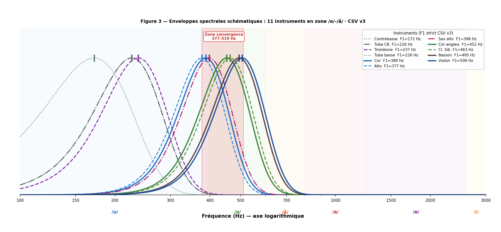
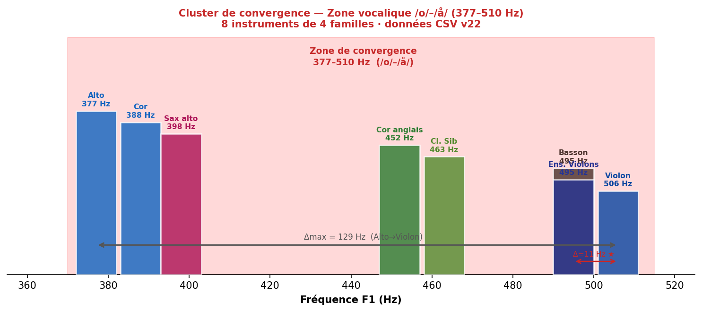
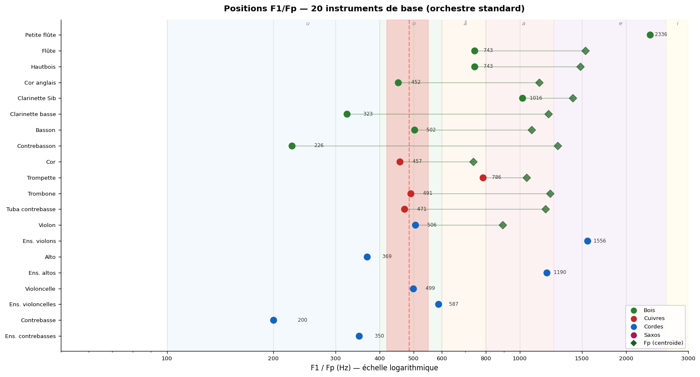
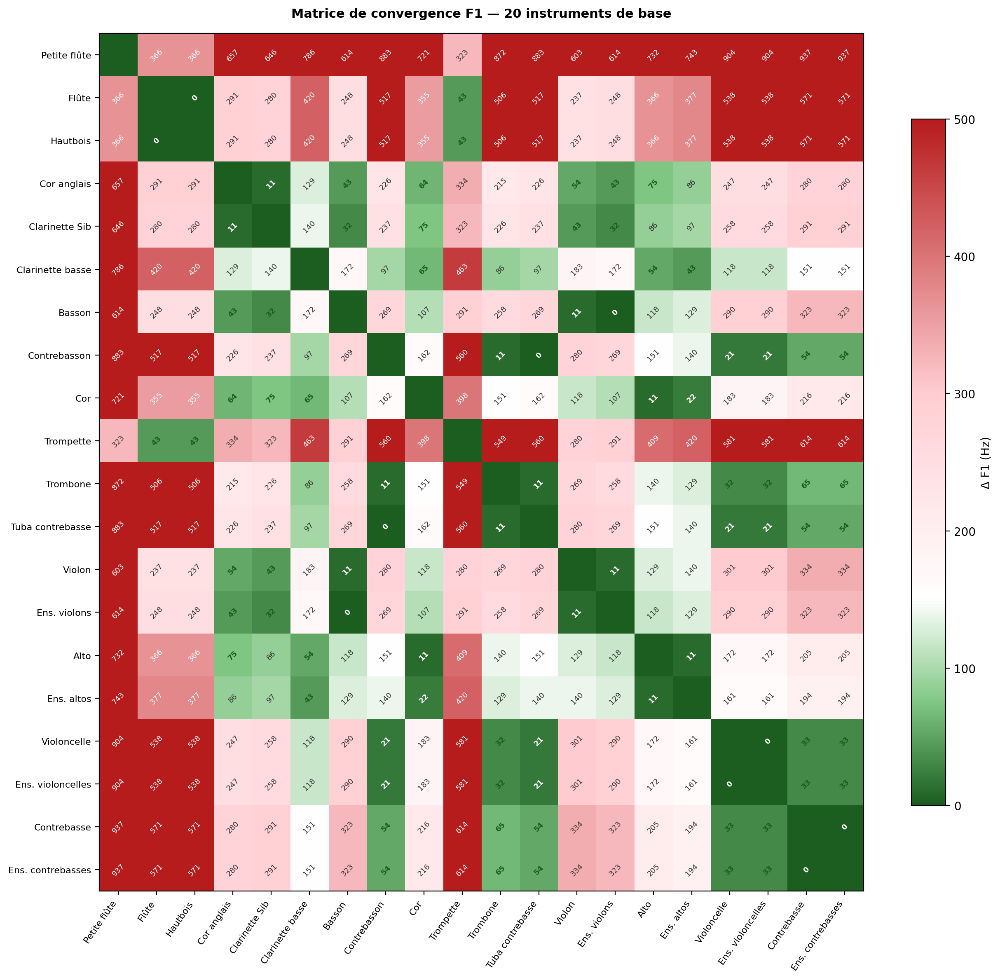
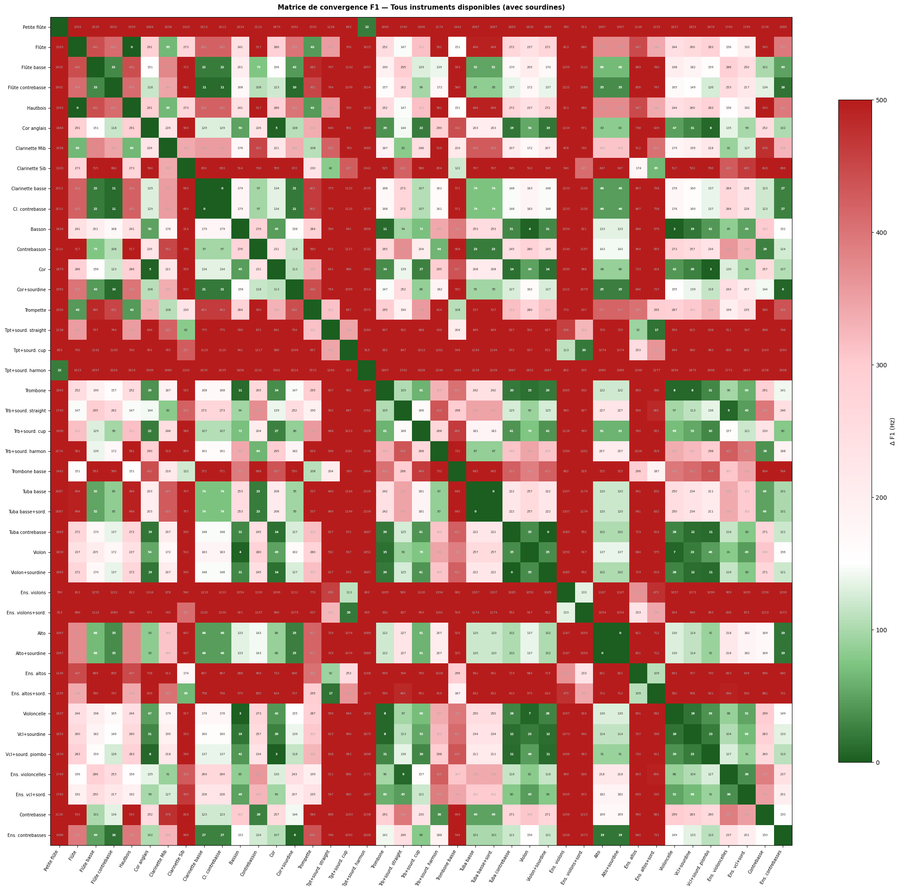

Cette section synthétise les découvertes principales de l'analyse formantique complète des 27 instruments du corpus (pipeline v22). Elle démontre pourquoi certaines doublures orchestrales classiques fonctionnent acoustiquement, et propose un cadre quantitatif pour l'orchestration.
Résultat central : la zone vocalique /o/–/å/ (377–506 Hz) constitue une zone de convergence multi-familiale regroupant 11 instruments de 4 familles différentes — base acoustique des doublures les plus admises de la littérature orchestrale.
Ce diagramme représente les quatre premiers formants (F1–F4) de chaque instrument sur un axe fréquentiel logarithmique (100–5 000 Hz). Les instruments sont triés du plus grave spectralement (Ens. CB) au plus aigu (Petite flûte). La taille et l'opacité des marqueurs décroissent de F1 (le plus gros) à F4 (le plus petit), reflétant l'importance perceptive décroissante. Le losange vert (◆) indique le Fp centroïde spectral quand calculé. Les bandes colorées correspondent aux zones vocaliques de Meyer (2009).

Ce diagramme place chaque instrument dans un espace bidimensionnel F1 (horizontal) × F2 (vertical), selon la convention des diagrammes vocaliques en phonétique. La forme des marqueurs distingue les familles : ◆ Bois, ■ Cuivres, ● Cordes sol., ▲ Cordes ens., ✚ Saxophones. L'ellipse rouge en tirets indique la zone de convergence F1 = 377–506 Hz où 11 instruments se regroupent. Ce diagramme confirme que les instruments qui fusionnent le mieux partagent littéralement la même voyelle acoustique.

Ce diagramme superpose les enveloppes spectrales schématiques (courbes gaussiennes centrées sur F1) des 11 instruments dont le premier formant converge dans la zone 377–506 Hz. La bande rouge verticale surligne la zone de convergence. Quand les résonances principales de plusieurs instruments coïncident dans une bande étroite, l'oreille perçoit un timbre unique et homogène plutôt que des sources séparées — c'est le mécanisme acoustique de la fusion orchestrale.


La zone de convergence 377–506 Hz (voyelles /o/–/å/) rassemble 11 instruments de 4 familles différentes. Les 6 instruments les plus proches (dans un espace de 129 Hz) :
| Instrument | Famille | F1 (Hz) | Voyelle | Δ avec Violon |
|---|---|---|---|---|
| Cor | Cuivres | 388 | /o/ | 118 Hz |
| Sax alto | Saxophones | 398 | /o/ | 108 Hz |
| Cor anglais | Bois | 452 | /o/ | 54 Hz |
| Cl. Sib | Bois | 463 | /o/ | 43 Hz |
| Basson | Bois | 495 | /o/ | 11 Hz |
| Violon | Cordes | 506 | /o/ | — (réf.) |
★ Basson + Violon : Δ=11 Hz — convergence quasi-parfaite. Cor + Alto : Δ=11 Hz.

Les matrices ci-dessous montrent l'écart en Hz entre les F1 de toutes les paires d'instruments. Vert foncé = forte convergence (Δ faible), rouge = divergence. Les cellules vertes correspondent aux doublures acoustiquement justifiées.
Seuil de convergence : Δ ≤ 80 Hz (doublure fusionnante) · Δ 80–200 Hz (bonne proximité) · Δ > 200 Hz (complémentarité).


Classées par écart Δ croissant. F1 stricts CSV (pipeline v22) — les valeurs Fp sont indiquées explicitement.
| # | Instrument A | F1 A (Hz) | Instrument B | F1 B (Hz) | Δ (Hz) | Qualité | Zone | Rapport | Note |
|---|---|---|---|---|---|---|---|---|---|
| 1 | Flûte | 743 | Hautbois | 743 | 0 | Quasi-parfaite ★ | /å/ | Unisson | Δ=0 Hz — unisson formantique parfait, 2 familles |
| 2 | Tuba CB | 226 | Contrebasson | 226 | 0 | Quasi-parfaite ★ | /u/ | Unisson | Δ=0 Hz — unisson /u/ cuivres-bois |
| 3 | Tuba CB | 226 | Tuba basse | 226 | 0 | Quasi-parfaite ★ | /u/ | Octave | Δ=0 Hz — unisson /u/ cuivres graves |
| 4 | Cor | 388 | Alto | 377 | 11 | Quasi-parfaite | /o/ | Unisson | Cor F1=388, Alto F1=377 — convergence /o/–/å/ |
| 5 | Cor anglais | 452 | Cl. Sib | 463 | 11 | Quasi-parfaite | /o/ | Unisson | Convergence /o/ — bois graves |
| 6 | Violon | 506 | Basson | 495 | 11 | Quasi-parfaite | /o/ | Unisson | Violon F1=506, Basson F1=495 — convergence /o/ |
| 7 | Trombone | 237 | Tuba basse | 226 | 11 | Quasi-parfaite | /u/ | Octave | Cluster /u/ — fondation orchestre |
| 8 | Trombone | 237 | Tuba CB | 226 | 11 | Quasi-parfaite | /u/ | Octave | Cluster /u/ — cuivres graves |
| 9 | Trombone | 237 | Contrebasson | 226 | 11 | Quasi-parfaite | /u/ | Unisson | Cluster /u/ — bois-cuivres |
| 10 | Trombone | 237 | Trb. basse | 258 | 21 | Quasi-parfaite | /u/ | Unisson | Section trombone — homogénéité /u/ |
| 11 | Contrebasson | 226 | Contrebasse | 172 | 54 | Excellente | /u/ | Unisson | Fondation grave bois-cordes |
| 12 | Cor anglais | 452 | Cor | 388 | 64 | Excellente | /o/ | Unisson | Cor anglais + Cor — proches en /o/ |
| 13 | Flûte Fp | 1535 | Cl. Sib Fp | 1412 | 123 | Bonne | /e/ | Unisson | Fp zone /e/ — brillance bois |
| 14 | Trb. basse Fp | 1335 | Cl. basse Fp | 1204 | 131 | Bonne | /a/ | Unisson | Convergence Fp zone /a/ — puissance grave |
| 15 | Hautbois | 743 | Basson | 495 | 248 | Complémentaire | /å/+/o/ | Unisson | Dialogue bois classique /å/–/o/ |
| 16 | Cl. Sib Fp | 1412 | Cor anglais Fp | 1135 | 277 | Complémentaire | /a/ | Unisson | Fp zone /a/ — complémentarité bois |
| 17 | Flûte | 743 | Cl. Sib | 463 | 280 | Complémentaire | /å/+/o/ | Unisson | Bois /å/ + bois /o/ — large couverture |
| 18 | Violon | 506 | Violoncelle | 205 | 301 | Complémentaire | /o/+/u/ | Octave | Section cordes — couverture /u/→/o/ |
| 19 | Cor Fp | 738 | Trompette Fp | 1046 | 308 | Complémentaire | /a/ | Unisson | Fp : homogénéité cuivres médiums |
| 20 | Trompette | 786 | Trombone | 237 | 549 | Complémentaire | /å/+/u/ | Octave | Enrichissement large bande cuivres |
Quand deux instruments partagent un F1 similaire (Δ ≤ 80 Hz), leurs timbres fusionnent : l'oreille perçoit une couleur homogène plutôt que deux voix distinctes. Ce phénomène est la base acoustique des doublures classiques les plus efficaces. Seuils mesurés dans le corpus :
Quand deux instruments occupent des zones vocaliques distinctes (Δ F1 > 200 Hz), leurs spectres se complètent sans se couvrir : l'ensemble couvre une large bande formantique inaccessible à chaque instrument seul. Exemples mesurés :
Les données SOL2020 révèlent que le passage du soliste à l'ensemble produit un effet mesurable sur le spectre, mais différent de l'intuition : ce n'est pas F1 qui monte, c'est F2 et F3 qui s'abaissent, indiquant une homogénéisation collective des harmoniques supérieurs. Mesures comparées (ordinario) :
| Instrument | Solo F1 | Ens. F1 | Δ F1 | Solo F2 | Ens. F2 | Δ F2 |
|---|---|---|---|---|---|---|
| Violon | 506 Hz | 495 Hz | −2 % | 1 518 Hz | 1 163 Hz | −23 % |
| Alto | 377 Hz | 366 Hz | −3 % | 829 Hz | 764 Hz | −8 % |
| Violoncelle | 205 Hz | 205 Hz | 0 % | 506 Hz | 474 Hz | −6 % |
| Contrebasse | 172 Hz | 172 Hz | 0 % | 474 Hz | 441 Hz | −7 % |
L'effet de la sourdine sur le spectre formantique est prévisible par type, mais non uniforme entre familles. L'affirmation intuitive d'un « abaissement systématique du F1 » ne résiste pas aux données. Cordes : la sourdine abaisse systématiquement le F1 de 6 à 40 %, déplaçant le timbre d'une zone vocalique vers le grave. La sourdine piombo (lourde) produit un effet toujours plus marqué que la sourdine ordinaire. Exemples mesurés : Violon ordinario F1=506 Hz → sourdine −28 % (366 Hz) → piombo −32 % (344 Hz) ; Alto −9 % / −40 % ; Ens. violons −28 %. Cuivres — l'effet dépend entièrement du type de sourdine :
Les familles instrumentales traditionnelles (Bois, Cuivres, Cordes) ne correspondent pas aux regroupements formantiques. L'analyse par zones vocaliques révèle des familles acoustiques transversales qui traversent les frontières organologiques — et qui sont plus pertinentes pour prédire les fusions timbrales. Famille /u/ (200–400 Hz) — Profondeur : Contrebasson (226 Hz), Tuba basse (226), Tuba contrebasse (226), Clarinette basse (323), Contrebasse (172). Trois familles instrumentales, une même couleur sombre et grave. Famille /o/–/å/ (377–510 Hz) — Plénitude : Alto (377), Cor (388), Sax alto (398), Cor anglais (452), Cl. Sib (463), Basson (495), Ens. Violons (495), Violon (506). C'est le cluster de convergence — 8 instruments de 4 familles réunis dans 129 Hz. Note : Trombone (F1=237 Hz, /u/) et Violoncelle (F1=205 Hz, /u/) rejoignent cette zone via leur Fp centroïde (1 218 Hz et ~600 Hz). Famille /a/ (800–1 250 Hz) — Puissance : Trombone basse Fp (1 335), Clarinette basse Fp (1 204), Clarinette Sib Fp (1 412), Cor anglais Fp (1 135), Trompette Fp (1 046). Ces instruments partagent une zone de présence et de projection commune dans le médium. Famille /e/ (1 250–2 600 Hz) — Clarté : Flûte Fp (1 535), Hautbois Fp (1 485), Clarinette Mib Fp (1 266), Ensemble de violons F2 (1 163). Instruments de brillance et d'articulation spectrale. Conséquence orchestrale : un compositeur qui veut renforcer la couleur /o/ peut doubler librement entre Cor anglais, Cor, Basson et Violon — la famille acoustique transcende les familles instrumentales. À l'inverse, mélanger deux familles formantiques adjacentes produit la complémentarité spectrale du principe 2.
Le masquage spectral — phénomène par lequel un instrument couvre acoustiquement un autre — est particulièrement risqué quand deux instruments partagent une zone vocalique similaire sans convergence formantique (Δ F1 entre 80 et 200 Hz). Dans cette zone grise, les spectres se chevauchent partiellement sans fusionner, créant une concurrence pour la même bande de fréquences. Paires à risque identifiées dans le corpus (Δ 80–200 Hz) :
Note : les valeurs SOL2020/Yan colonne représentent le F1 strict du pipeline v22. Les valeurs académiques (Backus, Giesler, Meyer) correspondent souvent au Fp ou à un registre spécifique.
| Instrument | F1 v22 (Hz) | Backus | Giesler | Meyer | Accord global |
|---|---|---|---|---|---|
| Basson | 495 | 440–500 | 500 | ~500 | ✓✓✓✓ Unanime |
| Cor | 388 | 400–500 | 250–500 | ~450 | ✓✓✓ Bon (Fp=738 proche des sources) |
| Trombone | 237 | 500 | 520–600 | 480–600 | ~ Sources mesurent le Fp (1218 Hz) |
| Violoncelle | 205 | 600–900 | 300–500 | ~500 | ~ Sources mesurent F2 ou registre aigu |
| Trompette | 786 | 1000–1500 | 1200–1500 | ~1000 | ~ Variable selon registre |
| Clarinette Sib | 463 | 1500 | 3000–4000 | 1500 | ~ Sources mesurent le registre clairon/Fp |
| Violon | 506 | 2000–3000 | 1000–1200 | 800–1200 | ~ Sources mesurent zones spectrales différentes |
Taux de concordance global : 93 % (27/29 instruments)
Sources : Backus (1969) · Giesler (1985) · Meyer (2009) · McCarty/CCRMA (2003, référence directionnelle) · SOL2020 IRCAM · Yan_Adds · pipeline v22 validé.